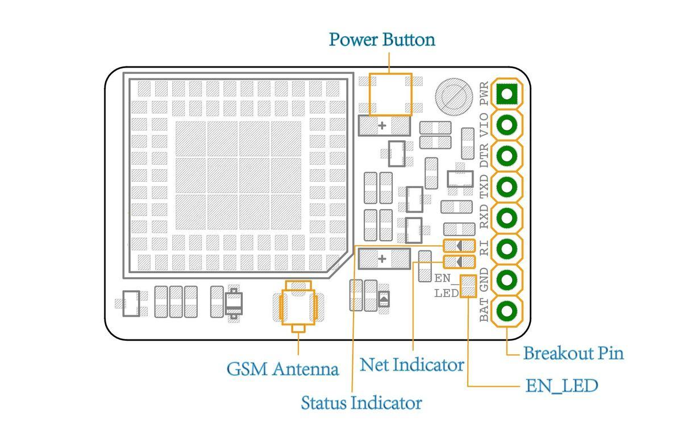
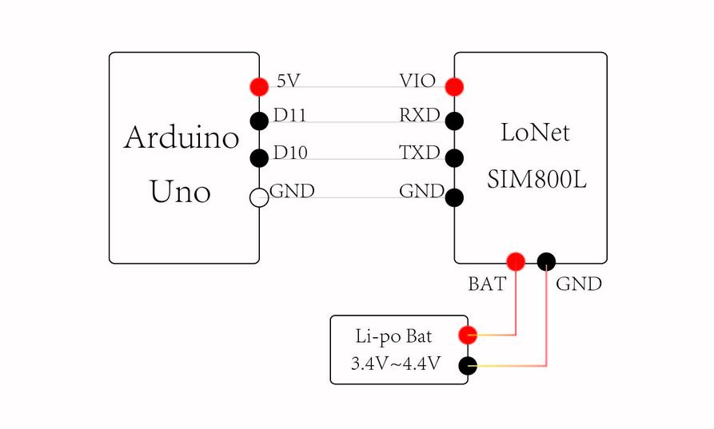

This is not the replacement for the LoNet - Mini GSM/GPRS/GPS Breakout, but a simplified version without GPS function. It is based on SIM800L module, supports quad-band GSM/GPRS network, available for GPRS and SMS message data remote transmission.
The board features compact size and low current consumption. The size is only two times as large as a coin. With power saving technique, the current consumption is as low as 1mA in sleep mode. It communicates with microcontroller via UART port, supports command including 3GPP TS 27.007, 27.005 and SIMCOM enhanced AT Commands. It also has built-in level translation, so it can work with microcontrollor of higher voltage than 2.8V default. Beside, the board also supports A-GPS technique which is called mobile positioning and gets position by mobile network. This features make it can also be a tracker module.
This board is specially designed for project in a small box and powered by 3.7 li-po battery. If you want a Arduino shield, we are suggesting you pick up the SeeedStduio GPRS Shield.

| LED | Status | Function |
|---|---|---|
| Status Indicator (Green) | Off | Power of LoNet is off |
| On | Power of LoNet is on | |
| Net Indicator (Red) | Off | Power of LoNet is off |
| 64ms on/800ms off | LoNet can't find the network | |
| 64ms On/3000ms Off | LoNet has connected to network | |
| 64ms ON/3000ms Off | GPRS communication |
This is a example for testing AT command with Arduino Uno. If you use an USB to serial tools, you can use AT Command Tester or SSCOM32 to test AT commands.

// this sketch is used for testing LoNet with Arduino
// Connect VIO to +5V
// Connect GND to Ground
// Connect RX (data into SIM800L) to Digital 11
// Connect TX (data out from SIM800L) to Digital 10
#include <SoftwareSerial.h>
SoftwareSerial mySerial(10, 11); // RX, TX
void setup()
{
// Open serial communications and wait for port to open:
Serial.begin(9600);
mySerial.begin(9600);
}
void loop() // run over and over
{
if (mySerial.available())
Serial.write(mySerial.read());
if (Serial.available())
{
while(Serial.available())
{
mySerial.write(Serial.read());
}
mySerial.println();
}
}
It is recommended to execute this process when first time to use the module. In the Serial Monitor columns of following tables, input of AT commands are in back, module returns values are in orange.
| Serial Monitor | Description |
|---|---|
| AT OK |
Send command “AT” to synchronize baud rate. Serial port of module is by default set at auto-baud mode, and in this mode, it will not output any indications when the module is on. |
| AT+IPR=9600 OK |
Set baud rate at 9600bps, supports baud rate from 1200bps to 115200bps. |
| AT&W OK |
Save parameter setting. |
| AT+CPOWD=1 NORMAL POWER DOWN |
Power down the module. |
| RDY +CFUN: 1 GPS Ready +CPIN: READY Call Ready SMS Ready |
Turn on the module again by the power button, it will response status about GPS and GSM. |
| AT+CBC +CBC: 1,96,4175 OK |
Inquire charging status and remaining battery capacity. |
| AT+CSQ +CSQ: 14,0 OK |
Inquire GSM signal quality. |
Any tech support, please contact deray@deegou.com
We do also provide PCB services ( Electronics design, prototype assembly and batch manufacturing ) If you have any requirements, please contact info@deegou.com
Copyright (c) 2008-2016 Seeed Development Limited (www.seeedstudio.com / www.seeed.cc)